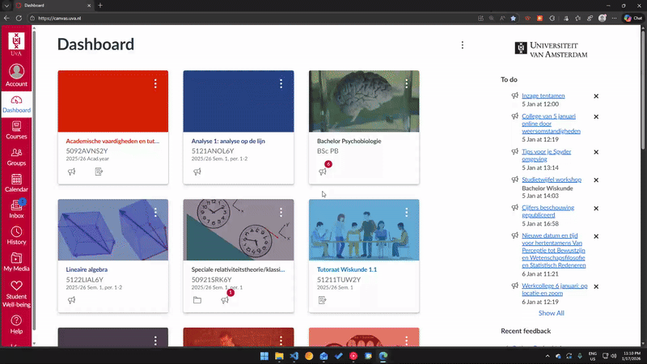

1
Go to 'All Courses'
Navigate to your courses list in Canvas to manage your dashboard.
2
Click the stars
Click the star icon (☆) next to the courses you want to add to the top bar. Once the star turns yellow, it is a favourite.
